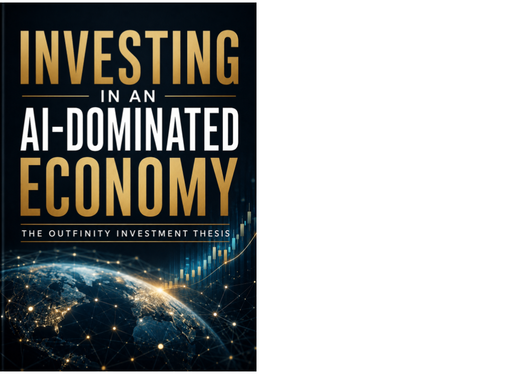

Culture, Care & Experiments · Axiologic Research Editions
Investing in an AI-Dominated Economy
The Outfinity Investment Thesis
Look beyond the impressive AI demo and ask what survives when its underlying capability becomes cheap. This book invites investors, founders, and researchers to examine control points, institutional deficits, venture evolution, and the proposed Outfinity strategy for building two enduring brands from a shared research engine.
Loading editions…
39 pagesLoading available editions…
Investing after intelligence becomes infrastructure
AI changes the economics of creation, coordination and judgment. This thesis considers where durable value may emerge, and why strategic investment must remain connected to real capability, human agency and accountable institutions.